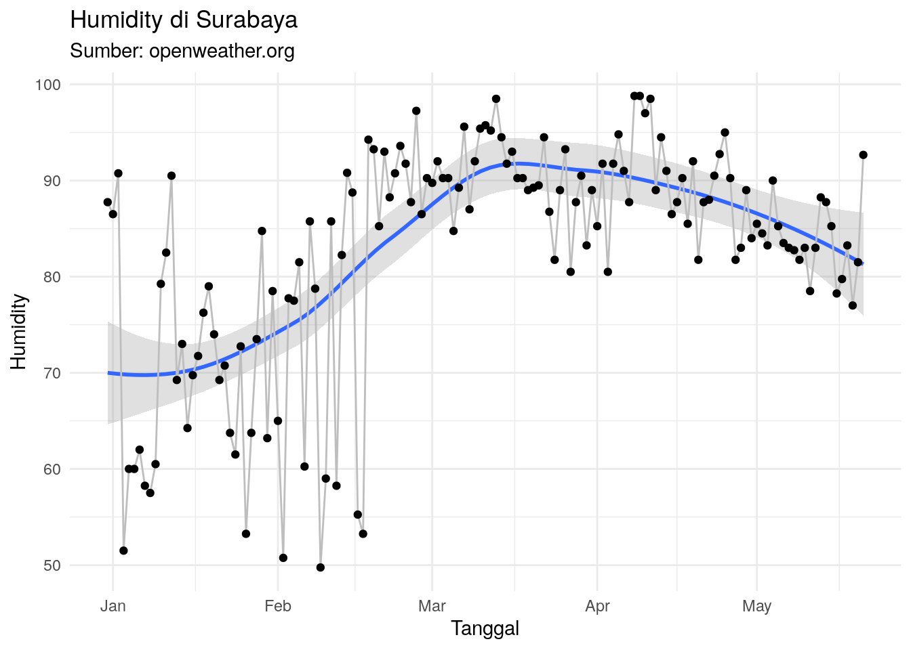

Show me the code!
colnames(df_final)[-1] [1] "kota" "kondisi" "detail_kondisi" "suhu"
[5] "suhu_min" "suhu_max" "feel_like" "humidity"
[9] "lon" "lat" "waktu" Penjelasan Singkat
Tim market riset melakukan pilot project untuk mengambil data cuaca di beberapa kota di Indonesia sebagai tabungan data yang mungkin akan berguna suatu saat nanti.
Temuan kualitatif saat survey terhadap operator makanan dan minuman:
Cuaca panas membuat konsumen membeli minuman seperti NutriSari. Kebalikannya, cuaca dingin membuat jualan minuman seperti NutriSari sepi.
Mengambil data cuaca di beberapa kota di Indonesia.
Data cuaca diambil dari situs Open Weather Map mengandalkan API yang disediakan. Data cuaca yang diambil adalah:
colnames(df_final)[-1] [1] "kota" "kondisi" "detail_kondisi" "suhu"
[5] "suhu_min" "suhu_max" "feel_like" "humidity"
[9] "lon" "lat" "waktu" Kenapa mengambil data cuaca dari situs Open Weather Map? Alasannya:
Berikut adalah kota yang diambil data cuacanya:
Pada bagian ini, kita akan melihat data cuaca di beberapa kota berikut. Namun saya akan menggunakan data pada waktu jam kerja, yakni pukul 08.00 - 18.00.
Berikut adalah sebaran data di beberapa kota di Indonesia:
bikin_sebaran("Semarang")
bikin_sebaran("Jakarta")bikin_sebaran("Surabaya")
Berikut adalah trend feel like dari beberapa kota di Indonesia berikut:
bikin_grafik("Semarang")
bikin_grafik("Jakarta")
bikin_grafik("Surabaya")Berikut adalah trend humidity dari beberapa kota di Indonesia berikut:
bikin_grafik_2("Semarang")
bikin_grafik_2("Jakarta")
bikin_grafik_2("Surabaya")
Berikut adalah 10 kota dengan rata-rata feel like tertinggi di setiap bulannya.
list_bulan =
df_final %>%
mutate(jam = lubridate::hour(waktu)) |>
filter(jam >= 8 & jam <= 18) |>
mutate(bulan = lubridate::month(waktu)) %>%
group_by(bulan,kota) %>%
summarise(suhu_mean = mean(feel_like),
suhu_median = median(feel_like)) %>%
ungroup() %>%
group_split(bulan)
list_bulan[[1]] %>% arrange(desc(suhu_mean)) |> head(10) %>% knitr::kable(caption = "Januari 2024")| bulan | kota | suhu_mean | suhu_median |
|---|---|---|---|
| 1 | Depok | 31.52693 | 31.760 |
| 1 | Tangerang Selatan | 31.19168 | 30.920 |
| 1 | Sidoarjo | 31.02669 | 31.100 |
| 1 | Gresik | 30.96315 | 31.115 |
| 1 | Semarang | 30.79232 | 30.520 |
| 1 | Bogor | 30.58766 | 31.310 |
| 1 | Jakarta | 30.26211 | 30.080 |
| 1 | Tangerang | 30.19167 | 30.050 |
| 1 | Bekasi | 29.98045 | 29.285 |
| 1 | Probolinggo | 29.75355 | 29.875 |
list_bulan[[2]] %>% arrange(desc(suhu_mean)) |> head(10) %>% knitr::kable(caption = "Februari 2024")| bulan | kota | suhu_mean | suhu_median |
|---|---|---|---|
| 2 | Depok | 31.71008 | 31.610 |
| 2 | Tangerang Selatan | 31.68156 | 31.330 |
| 2 | Gresik | 31.15560 | 32.120 |
| 2 | Jakarta | 31.14108 | 30.755 |
| 2 | Semarang | 31.11647 | 31.700 |
| 2 | Bekasi | 30.86275 | 30.865 |
| 2 | Tangerang | 30.85537 | 30.510 |
| 2 | Sidoarjo | 30.79842 | 31.100 |
| 2 | Bogor | 30.25397 | 30.525 |
| 2 | Surabaya | 30.17874 | 29.410 |
list_bulan[[3]] %>% arrange(desc(suhu_mean)) |> head(10) %>% knitr::kable(caption = "Maret 2024")| bulan | kota | suhu_mean | suhu_median |
|---|---|---|---|
| 3 | Semarang | 31.72659 | 31.085 |
| 3 | Surabaya | 31.20299 | 31.070 |
| 3 | Sidoarjo | 31.16288 | 31.100 |
| 3 | Tangerang Selatan | 31.11708 | 30.680 |
| 3 | Depok | 30.92832 | 30.530 |
| 3 | Gresik | 30.86065 | 30.800 |
| 3 | Jakarta | 30.50947 | 30.120 |
| 3 | Bekasi | 30.23039 | 29.640 |
| 3 | Bogor | 30.13645 | 30.515 |
| 3 | Tangerang | 30.00109 | 29.530 |
list_bulan[[4]] %>% arrange(desc(suhu_mean)) |> head(10) %>% knitr::kable(caption = "April 2024")| bulan | kota | suhu_mean | suhu_median |
|---|---|---|---|
| 4 | Ambon City | 32.66118 | 33.820 |
| 4 | Semarang | 32.61458 | 32.460 |
| 4 | Tangerang Selatan | 32.56475 | 31.900 |
| 4 | Jakarta | 31.95322 | 31.440 |
| 4 | Tangerang | 31.86941 | 31.740 |
| 4 | Surabaya | 31.81139 | 31.730 |
| 4 | Sidoarjo | 31.71476 | 31.770 |
| 4 | Depok | 31.64525 | 31.180 |
| 4 | Bekasi | 31.52883 | 30.955 |
| 4 | Gresik | 31.47342 | 31.110 |
list_bulan[[5]] %>% arrange(desc(suhu_mean)) |> head(10) %>% knitr::kable(caption = "Mei 2024")| bulan | kota | suhu_mean | suhu_median |
|---|---|---|---|
| 5 | Kupang | 35.26458 | 35.320 |
| 5 | Tangerang Selatan | 33.63018 | 33.280 |
| 5 | Semarang | 33.34357 | 33.450 |
| 5 | Bekasi | 33.25544 | 32.640 |
| 5 | Jakarta | 33.24086 | 32.350 |
| 5 | Tangerang | 33.06172 | 33.060 |
| 5 | Depok | 32.66814 | 32.180 |
| 5 | Solo | 32.50429 | 33.425 |
| 5 | Bogor | 31.74286 | 32.045 |
| 5 | Sidoarjo | 31.71607 | 31.750 |